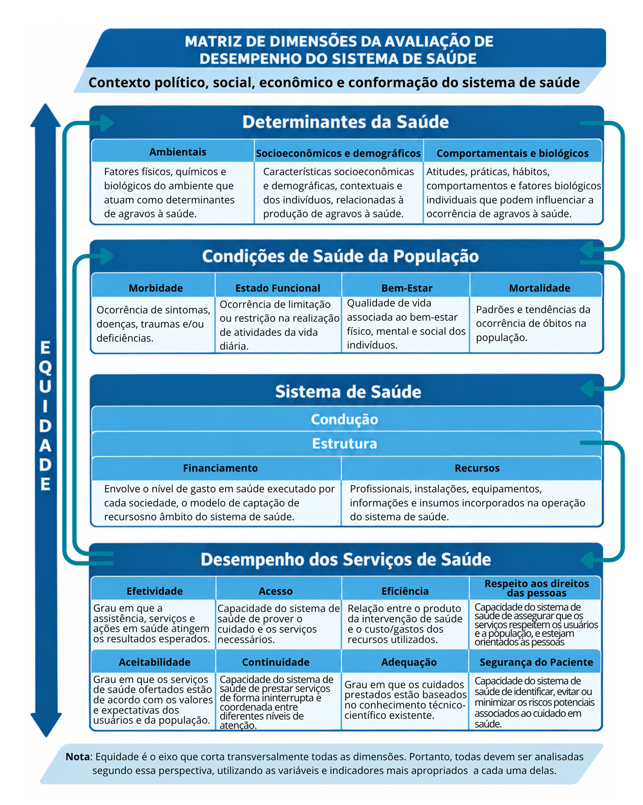

Módulo 1 | Aula 3
O Projeto de Avaliação de Desempenho do Sistema de Saúde (Proadess)
A matriz conceitual do Proadess
A matriz conceitual do Proadess organiza a avaliação do sistema de saúde brasileiro em quatro dimensões interdependentes, partindo do pressuposto de que o desempenho dos serviços não ocorre de forma isolada, mas é influenciado por fatores estruturais e contextuais.
O desempenho do sistema de saúde brasileiro deve ser analisado em um contexto político, social e econômico que traduza a sua história e a sua conformação atual, seus objetivos e suas prioridades. Assim, precisam ser identificados:
Prioritários, evitáveis ou passíveis de intervenção, cuja apreciação necessita considerar os impactos em diferentes grupos sociais.
Concorrem para a conformação do perfil de necessidades de saúde. Buscam caracterizar as condições de saúde em termos de morbidade, mortalidade, limitação de atividade física e qualidade de vida, e conformam a segunda dimensão da avaliação, que permite conhecer a magnitude dos problemas e a sua expressão em diferentes regiões geográficas e grupos sociais.
O perfil de morbimortalidade, que expressa as necessidades de saúde, deve orientar a estrutura do sistema de saúde (condução, financiamento e recursos) que, por sua vez, condiciona as possibilidades de um melhor ou pior desempenho dos serviços de saúde, objeto último da avaliação, que inclui as subdimensões:
- Acesso;
- Efetividade;
- Efetividade;
- Eficiência;
- Adequação;
- Continuidade;
- Segurança;
- Aceitabilidade;
- Respeito aos direitos das pessoas.

Assista ao vídeo a seguir sobre a matriz conceitual do Proadess.
A matriz conceitual do Proadess foi atualizada em 2012.
Leia o artigo
Desempenho de Sistemas de Saúde: um modelo de análise.
colocar o vídeo